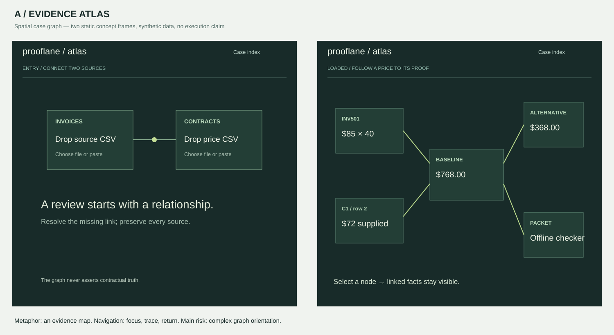
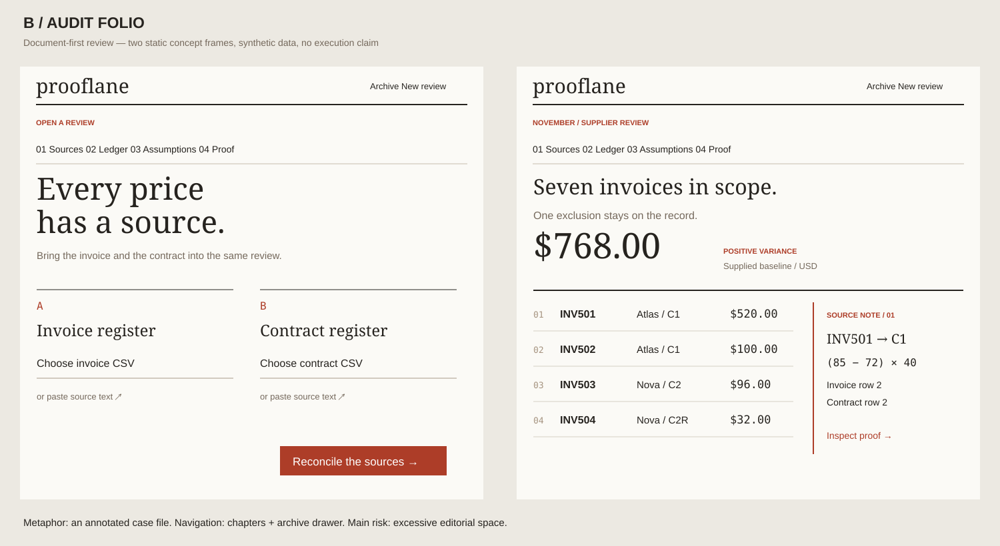
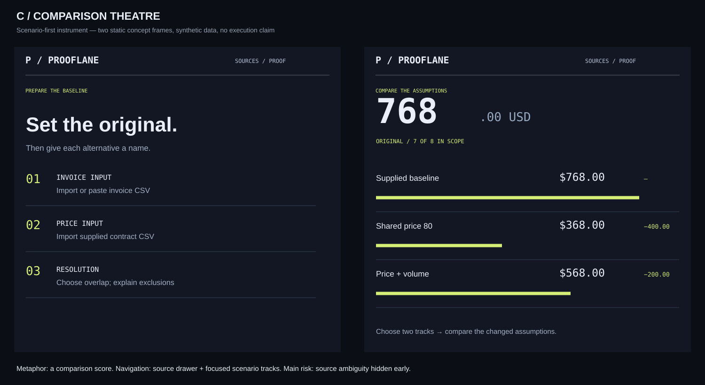

Prooflane / three distinct concept studies
Static visual specifications. Each sheet uses the same 1500×820 frame with an entry and loaded state. Synthetic example only; no app execution or usability verification is claimed. These sheets are intentionally different compositions, not functional prototypes.


